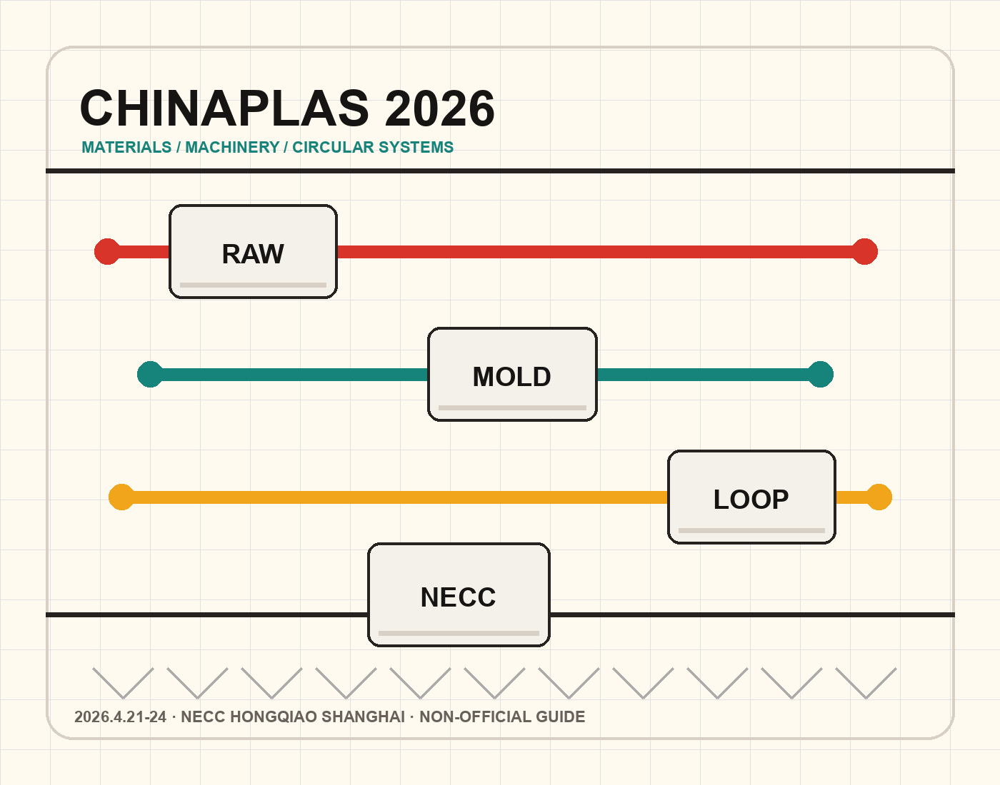

预计总展览面积，单位为平方米。
非官方信息速览 · Independent Guide
CHINAPLAS 2026 参观指南
一页快速了解上海国际橡塑展的展期、地点、规模、重点展区和官方参观入口。适合观众、采购、材料与装备行业从业者做行前判断。
本站不是 CHINAPLAS 官方网站。展会事实信息请以 ChinaplasOnline.com 公告为准。

- 展期
- 2026.4.21 - 24
- 时间
- 09:30 - 17:30
- 地点
- 上海虹桥国家会展中心
- 性质
- 专业观众展会
Visitor Information
先确认时间、地点和入场方式。
CHINAPLAS 2026 为第 38 届国际橡塑展，官方信息显示展会在上海虹桥国家会展中心举行，地址为上海市青浦区崧泽大道 333 号。
官方页面说明展会仅面向贸易观众，18 岁以下人士不予入场。门票、现场登记和通行政策可能随展期变化，出发前应以官方参观页面为准。
参观速查
- 展会英文名International Exhibition on Plastics and Rubber Industries
- 展馆NECC Hongqiao, Shanghai
- 地址No.333 Songze Avenue Road, Qingpu District
- 建议动作出发前核对官方票务和交通信息
Facts & Figures
一个面向全球橡塑产业链的大型展会。
预计国际展商数量，覆盖装备、材料和解决方案。
官方预计贸易观众规模。
主题展区覆盖机械设备、原材料和创新产品。
以上规模数据来自 CHINAPLAS 官方 Facts & Figures 与参观信息页面的 2026 上海预估信息。
Key Areas of Focus
用四个主题判断是否值得到场。
绿色转型
可持续、循环经济、回收技术、生物基材料和低碳制造是采购与技术路线判断的核心。
新材料突破
工程塑料、热塑性弹性体、复合材料和高性能材料支撑新能源、医疗、航空航天等应用升级。
智能制造
注塑、挤出、检测、自动化、数字化管理和一体化产线更适合现场比较设备能力。
高端技术
面向高端制造和中国供应链创新，关注材料性能、工艺稳定性和降本效率。
Application Industries
适合这些行业重点关注。
- 汽车与零部件
- 包装与食品饮料
- 电子电气与通信
- 医疗健康
- 建筑与城市基础设施
- 新能源
- 循环回收
- 模具与工业设计
FAQ
常见问题
这个网站和 CHINAPLAS 官方是什么关系？
没有官方隶属关系。本站是非官方信息速览页，目的是整理公开信息并引导用户前往官方页面核对细节。
可以在这里完成预登记或购票吗？
不可以。登记、购票、展商后台、媒体订阅等操作都应在 CHINAPLAS 官方网站完成。
页面信息多久更新？
当前页面按 2026 年 4 月 23 日核对到的官方公开页面整理，并同步维护 sitemap 与索引元数据。正式收录状态以 Google Search Console 为准。